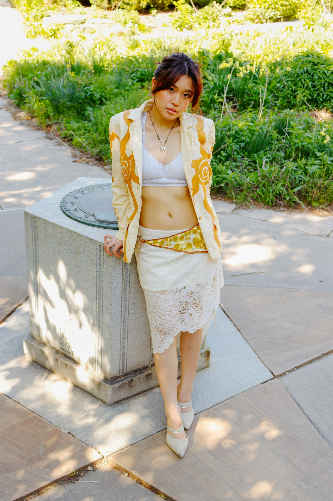
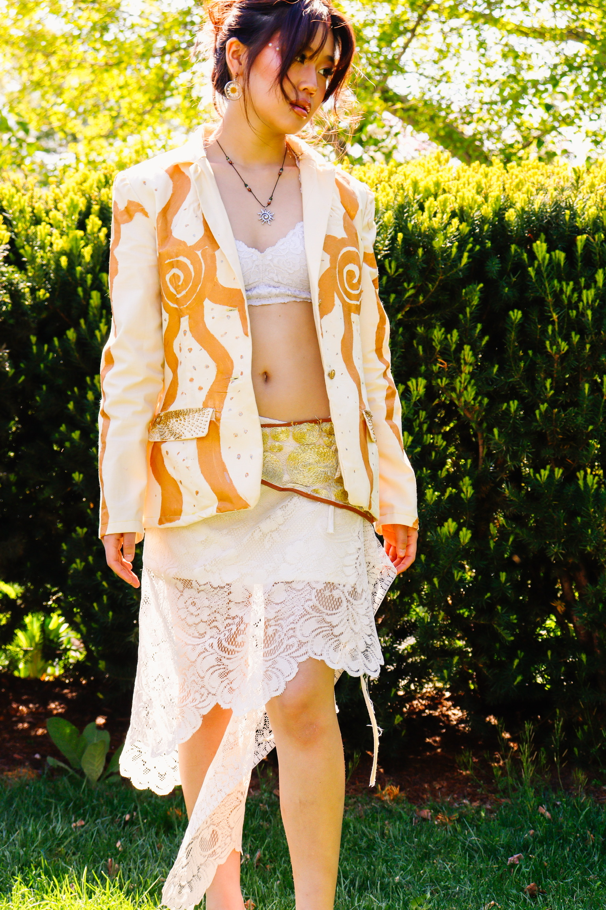
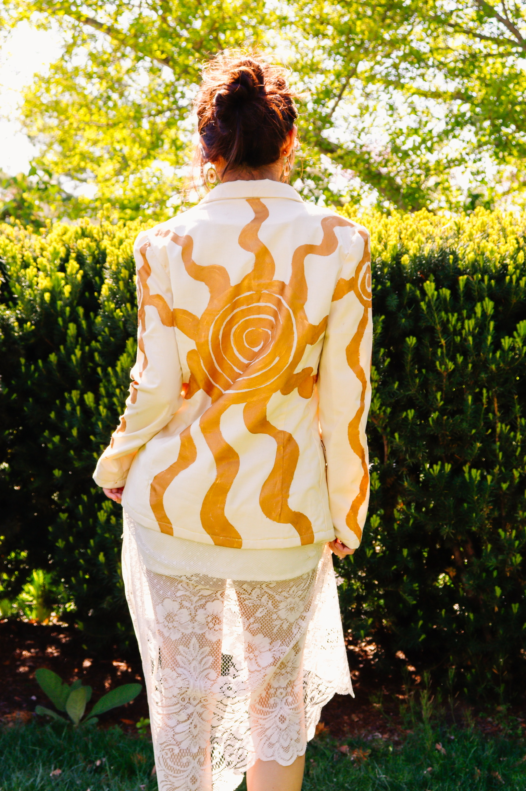
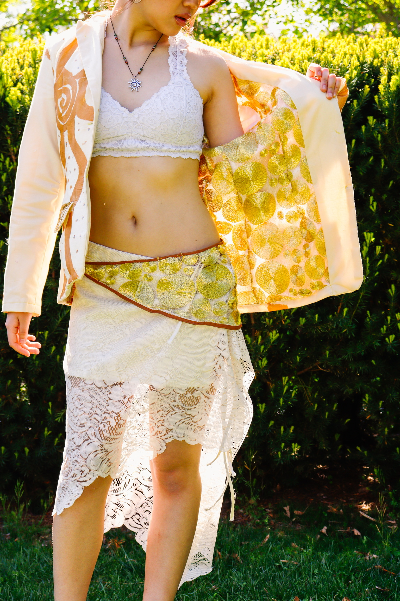
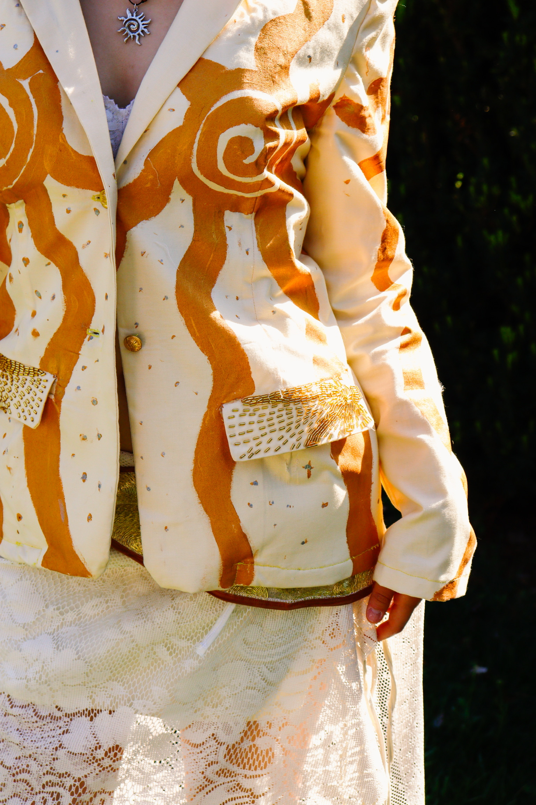
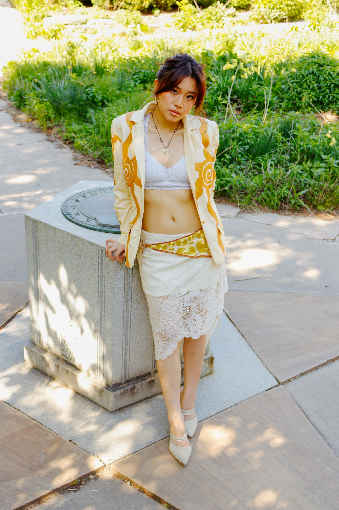
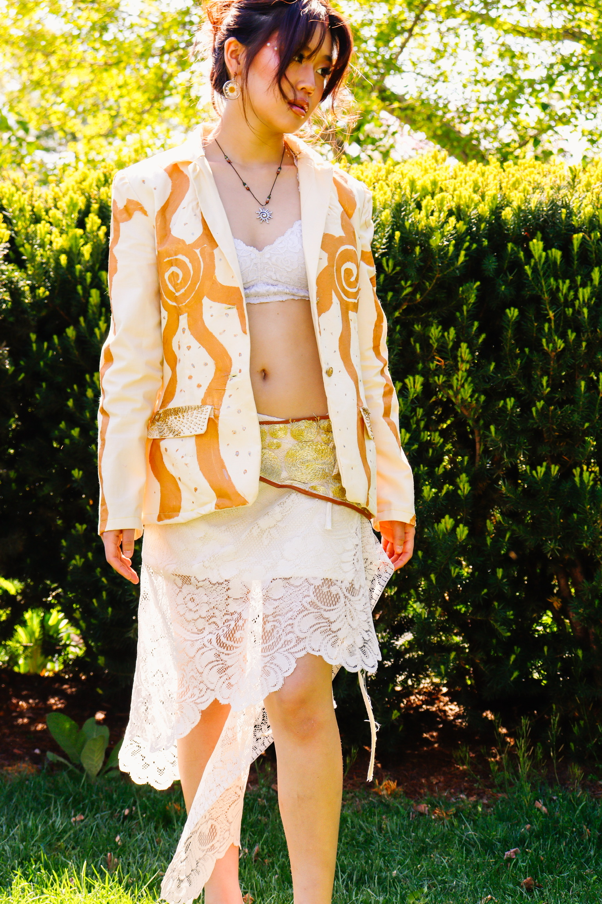
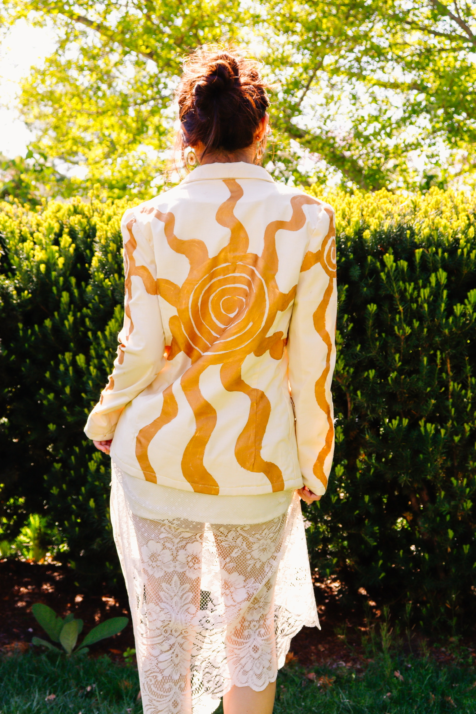
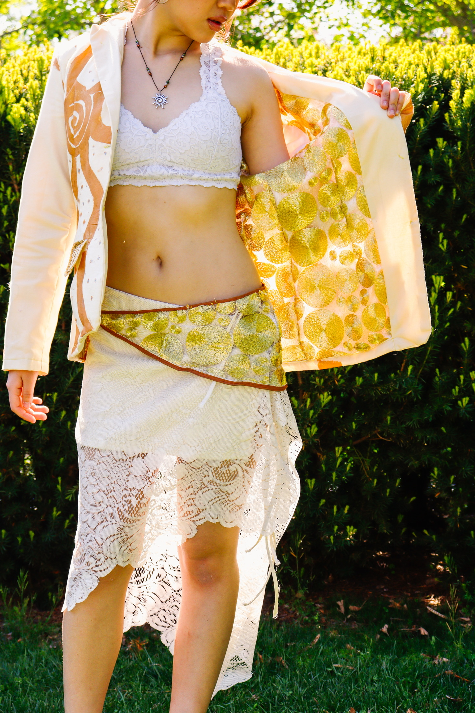
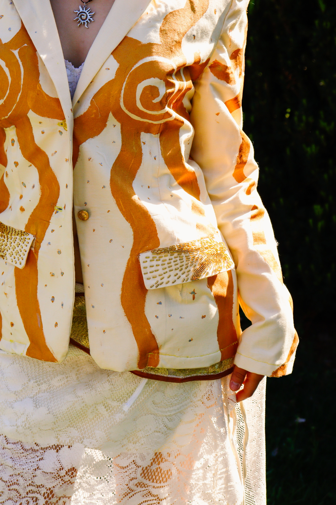

My Light is My Own
About the Project
This look fully fledges out the sun motif found throughout the collection. Instead of women being represented through the moon, here they are represented through the sun
The suns found throughout the blazer are hand painted, and the pockets are completely hand beaded.
The skirt is made using a thrifted laced curtain, finished with ties, giving it the ability to fit more body types.
Materials: Cotton, thrifted lace, vinyl, glass beads, fabric paint
 








